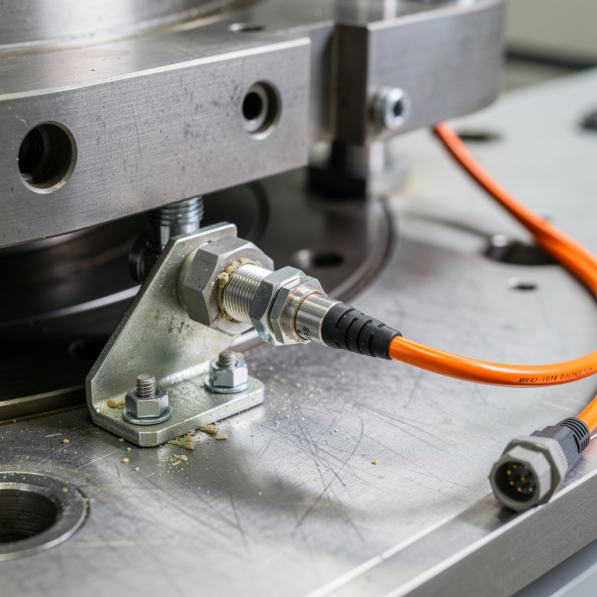
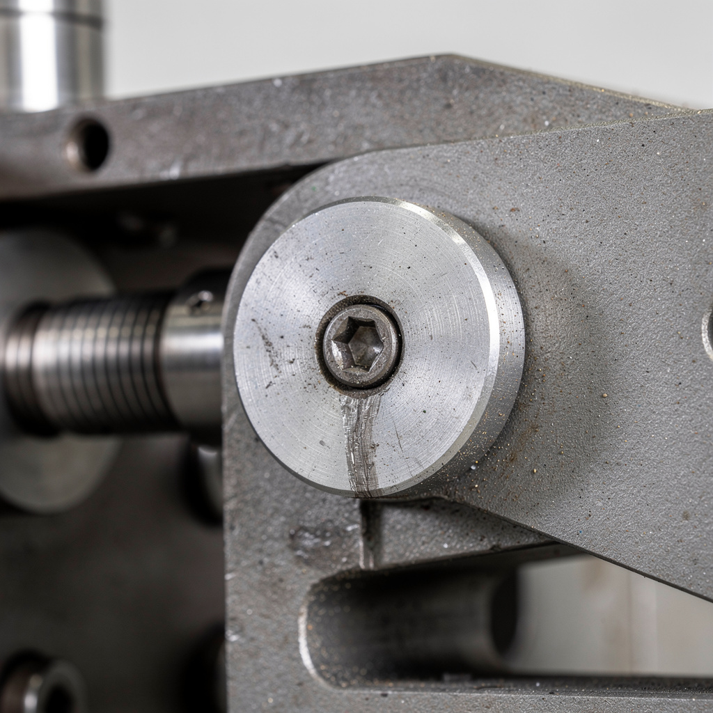

Panne capteur fermeture moule — Presse injection Engel 280T
// Le Problème
Contexte : Production automotive PA66+GF30, cycle 28 s, 250 pièces/heure. Moule 4 cavités, verrouillage hydraulique à double cylindre toggle.
Symptôme : Alarme 'MOULD NOT LOCKED' sur écran Engel. Le cycle d'injection s'interrompt aléatoirement 3–5 fois/heure au moment fermeture/verrouillage moule. L'opérateur est obligé de relancer manuellement la séquence fermeture. Accumulation de 12–15 relances/heure en pointe.
Observation terrain : quand l'alarme apparaît, le moule est physiquement verrouillé (bascule visible en position fin de course), mais le système ne détecte pas la fin de course — la séquence reste bloquée sur l'étape fermeture.
// Diagnostic
Vérification séquence : en mode manuel, commande fermeture moule déclenche le mouvement toggle. Le moule arrive bien en butée mécanique. LED verte du capteur fin de course ne s'allume pas systématiquement — clignote faiblement puis s'éteint. Fréquence : 1 cycle sur 4 environ.
Mesure capteur : capteur inductif M12, alimentation 24 V OK. Mesure distance air-gap entre face capteur et cible métallique toggle : 2,3 mm (spécification nominale 0,8–1,2 mm). Au-delà de 2 mm, le capteur inductif M12 standard perd la détection sur cible acier de petite surface.
Cause racine : vibrations répétées du mouvement toggle de fermeture ont desserré progressivement l'écrou de blocage du capteur sur sa bride métallique. Le capteur s'est écarté de 1 mm → air-gap passé de ~1 mm à 2,3 mm. Les vibrations proviennent d'un amortisseur de fin de course usé (non remplacé depuis 18 mois) qui laisse le toggle rebondir légèrement en butée.



// Solution apportée
// Résultat mesuré
Machine redémarrée après 1 h 15 d'arrêt. Zéro alarme fermeture moule sur 3 h de production test (vs 12–15 relances/heure avant). Temps cycle nominal 28 s rétabli. Économie vs appel constructeur Engel estimée à 3 200 € (déplacement + main d'œuvre + majoration urgence).